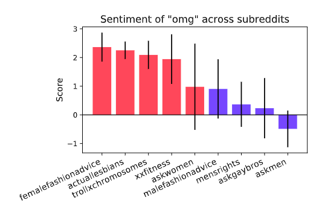

I'm a first-year PhD student at UC Berkeley School of Information and BAIR. I'm working on natural language processing (NLP) and computational social science. I'm supported by a NSF Graduate Research Fellowship and advised by David Bamman.
I'm currently interested in a variety of topics, including the behavior of online communities, sociolinguistic variation, commonsense reasoning, and computational semantics.
I have a M.S. in Computer Science (artificial intelligence) and B.S. in Symbolic Systems (≈ cognitive science) from Stanford. In the past I've worked in the Stanford NLP Group with Dora Demszky, the EPFL Data Science Lab with Robert West, and the SNAP Group with David Jurgens. I'm passionate about education and increasing diversity in computer science. For example, I taught machine learning and neural networks to high schoolers with AI4ALL at Stanford and Berkeley. Check out these Medium posts about NLP pedagogy.
This is my academic CV.
Pronouns: she/her
I publish with my name backwards, so citations should refer to "L. Lucy".

Using sentiment induction to understand variation in gendered online communities.
Li Lucy, Julia Mendelsohn.
SCiL 2019.
We examine gender as a social variable on Reddit, and how community-specific sentiment can be a useful indicator of social meaning. Link. Poster.
I love food so much that I've been Yelp Elite for three years.
I also design Snapchat geofilters, which have over 26 million views worldwide.
Before college, I interned on the production team for the Emmy-award-winning PBS Kids show, SciGirls.